Best Sellers
The favorites of the Music World
Yamaha Rev Black
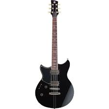399$
The Yamaha Revstar Standard RSS20 is the from the latest generation of Revstar guitars. It features the unique Revstar body shape, a carbon reinforced neck, and a sweet sound of notes.
Yamaha Upright Piano
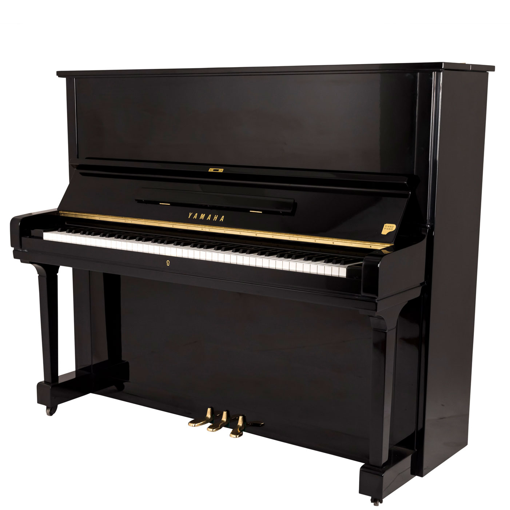2999$
The Yamaha JUJ upright piano is the from the latest collection of JU/IX pianos. It features the careful work of intrica te details. The Yamaha JUJ upright piano is tailored directly to meet your needs, at a height of 109cm.
Electric Drum Set
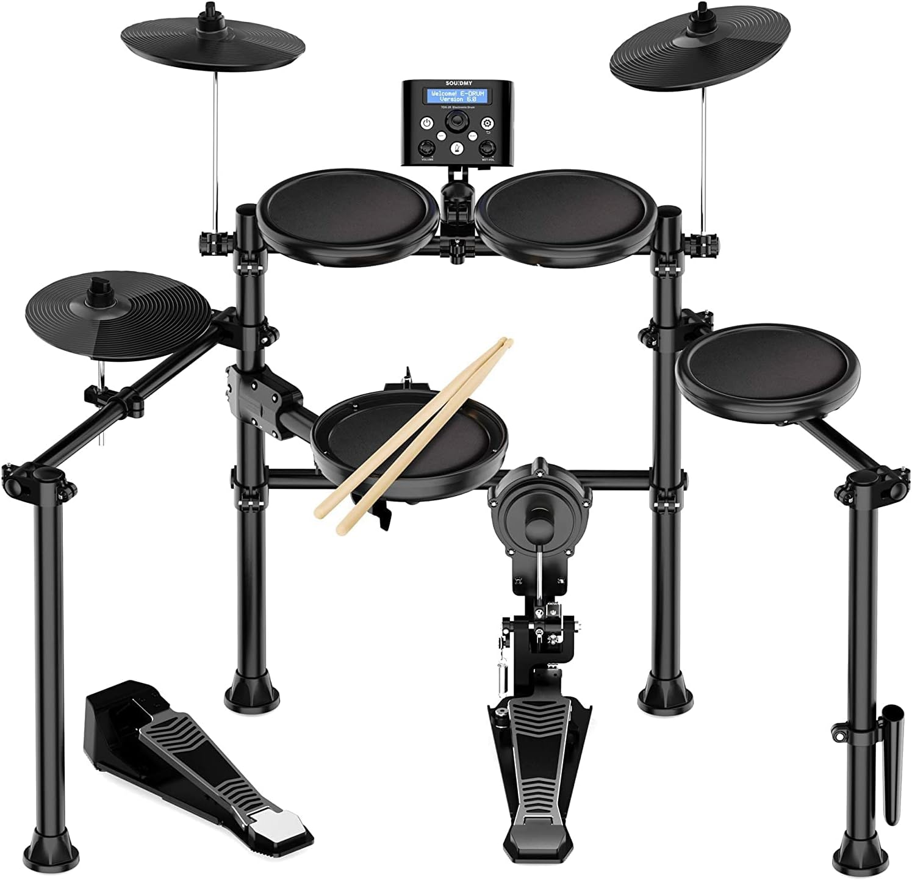799$
An Electric drum set designed specifically to meet the needs of drummers of all levels. It features a combination of efficient functionality with high sound quality and the best elegant drum pads.
Mozart 4/4 Violin
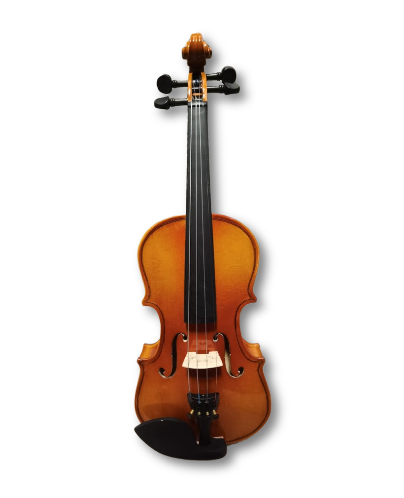399$
The Mozart 4/4 Violin is from the last generation of bigger Violins. It features the unique toned body shape, a carbon reinforced neck, and a sweet sound of notes inheriting the name of Mozart.
Guitars
Welcoming your favorite guitars
Yamaha FG Series

599$
The Mozart 4/4 Violin is from the last generation of bigger Violins. It features the unique toned body shape, a carbon reinforced neck, and a sweet sound of notes inheriting the name of Mozart.
RGX Electric
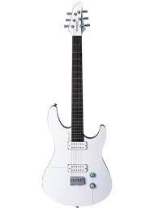399$
The RGX brings a revolutionary approach to guitar design. The final weight for the RGXA2 was set at around 2.5kg around 30% lighter than a regular solid body guitar but with all the feel and sound that players were looking for.
Fender Stratocaster
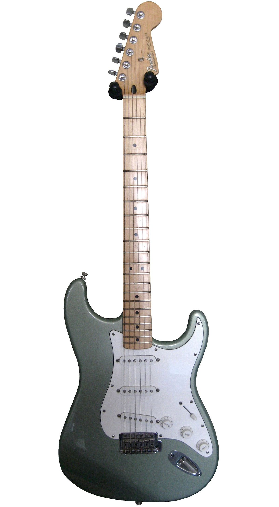679$
Bold, innovative and rugged, the Player Telecaster is pure Fender, through and through. The feel, the style and, most importantly, the sound - they're all there, waiting for you to make them whisper or wail for your music.
Yamaha FG Series
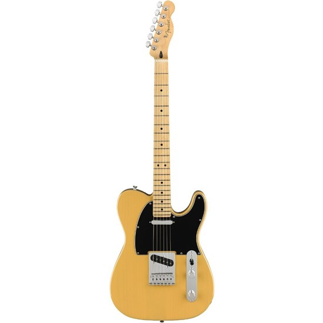899$
The Squier Sonic® Esquire® H is ready to launch, offering iconic Fender® style and inspiring tone for players. This squire supports a slim and inviting "C"-shaped neck profile and a thin, lightweight body for optimal playing comfort.
Piano
The Classics of Music
Kawai 500

1699$
Possessing unmatched power, dynamic range, and tonal richness, the K-500 is among the most popular upright pianos in the world. Kawai’s award-winning piano delivers an ultra-responsive touch and extraordinary dynamic range and control.
Yamaha CF6
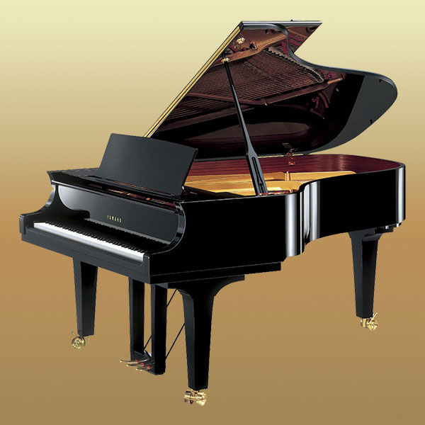3999$
The CF Series pianos are characterized by a wide palette of tonal colors and the ability to create the most subtle, expressive nuances. They can "sing" phrases with a depth of expressiveness rarely heard.
Korg lP-380
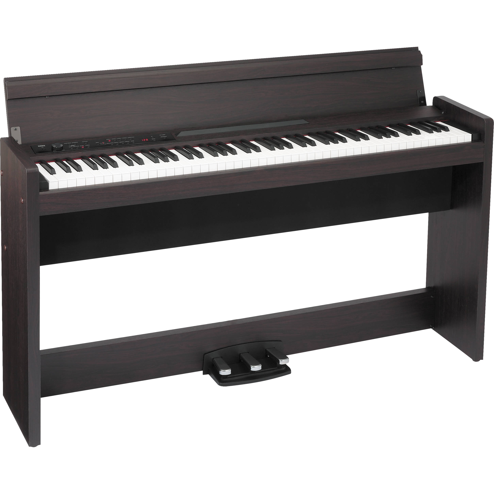499$
The Korg LP-180 is a fantastic digital piano, ideal for everyone from aspiring piano players to professionals. The thing that sets the LP-180 apart from conventional digital pianos is Korg’s unique Natural Weighted Hammer Action keyboard.
Electronic Keyboard
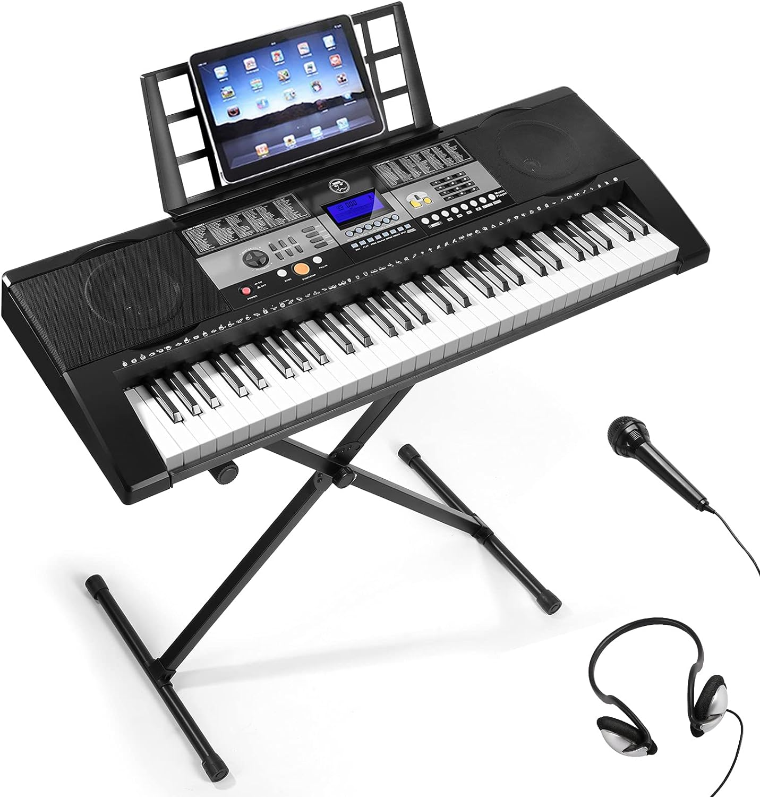299$
Piano Keyboard with Lighted Up Keys - it will give light hints during the process of playing, teaching and playing demo songs. Comes with 255 tones, 255 present rhythms, 50 demo songs and 2 built-in stereo speakers that help you express your feelings better.
Violin
Harmonious Vibrations attuned by the Violin
Yamaha FG Series
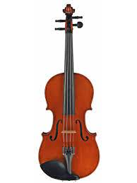199$
One of the most popular violins available today for the advanced violinist or adult amateur, the Maestro violin features some of the most beautiful figured woods and a rich oil varnish that is tastefully antiqued.
Yamaha FG Series
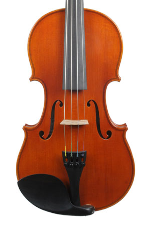699$
The Jay Haide Violin is completely hand-made. Great choice for intermediate students. Jay Haide Violins in this series have handsome wood and an even varnish in the modern Cremonese style.
Yamaha FG Series

1099$
With the Yamaha V5 SC44 Violin 4/4, Yamaha offers an affordable entry into the world of violins. Accordingly the 4/4 violin comes with a spruce top on a maple body and a maple neck. Only the best and hand selected woods are used.
Yamaha FG Series

999$
The Il Cessol Stradivarius Violin copy continues the legacy of a classic instrument. The two-piece maple body produces a warm, balanced tone with bright high frequencies. The Ebony fingerboard adds clarity to your sound, as well as having a comfortable feel. The Rosewood tailpiece adds complex overtones to your overall sound.
Drums
Embrace the beat of the drums
Crystal Pearl

899$
Crystal Beat's unparalleled tonal (and visual) clarity delivers a one-two punch for a new breed of power players. Precision molded, seamless acrylic shells in a variety of available sizes and finishes for an unmistakable drumming signature.
Oak Hybrid
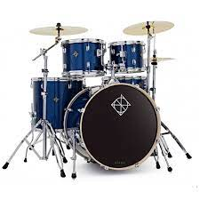199$
Yamaha has enhanced the dynamic range of the new Live Custom kits by accentuating their attack and projection. The new 7 ply Oak/Phenolic sheet hybrid shell and the Bass Enhancement Weight delivers massive power and articulation especially for playing in live situations
Roland VAD Hybrid
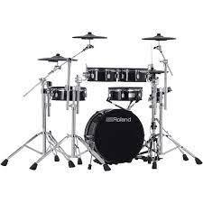599$
Traditional looks, authentic acoustic response: Roland’s VAD hybrid drum sets meet at the crossroads of natural feel and electronic versatility! Real wooden shells with tunable mesh heads capture the lively feedback of an acoustic drum that’s easily tuned to your personal playing preferences.
Gretsch Black
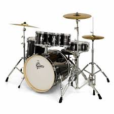499$
Energy drums sport 7-ply poplar shells with 30-degree bearing edges, 1.5mm triple-flanged hoops, and Remo heads. Gretsch-styled hardware includes mini lugs, tom brackets, tom holder, bass drum mount plate and snare throw off, and a finish that'll look great under stage lights.